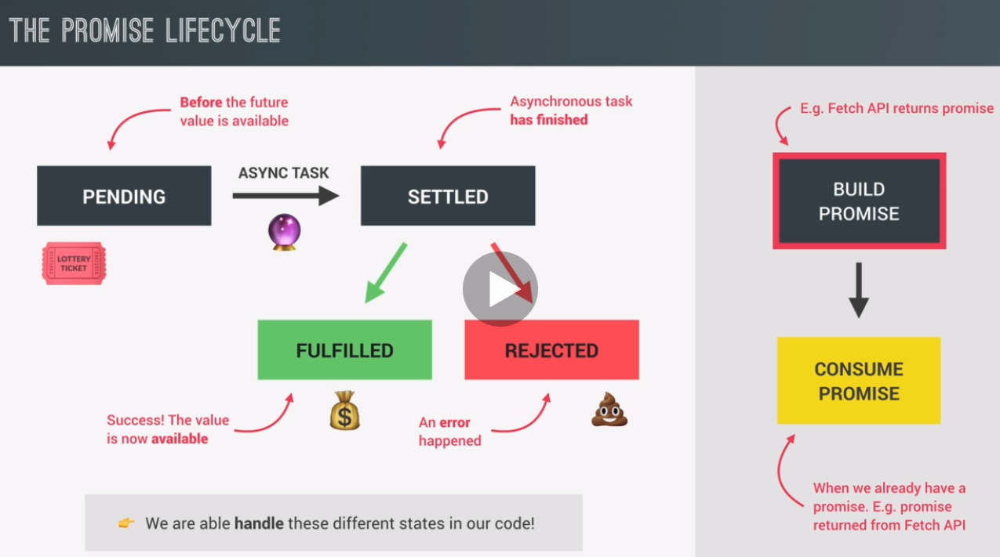
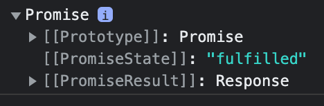
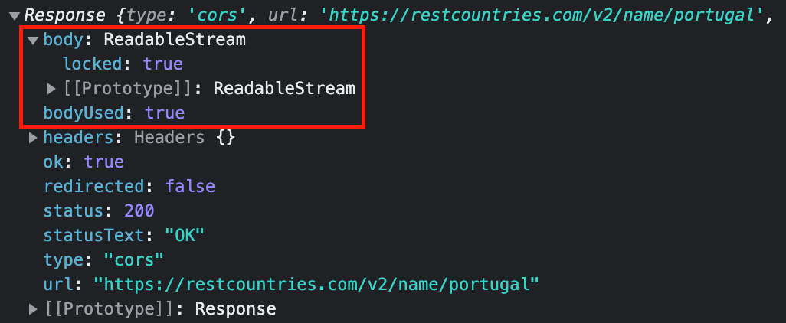

You no longer need to rely on events and callback functions to handle Asynchronous results.
Also, you can chain them (instead of nesting) which escapes callback hell.
Async functions use Promises behind the scenes, so understanding Promises is fundamental to understanding how Async/Await works.
Promises are time sensitive and change over time because they work with Asynchronous operations. This is called the lifecycle.
Promise start in a pending state.
This is before any value resulting from the Asynchronous task is available.
During this time, the Asynchronous task (calling function) continues executing in the background.
When the task finally finishes, the Promise is Settled.
There are two different types of Settled Promises.
A Fulfilled Promise has successfully resulted in a value that's available to be used.
This gives the calling function the data that was requested.
Rejected: a rejected promise means that there has been an error during the asynchronous task.
After the Promise finishes, it calls the callback functions (passed to then and catch).
A Promise is only settled once as Fulfilled or Rejected. It's impossible to change the state after it finishes.
Consuming a Promise is when it returns a result.
But in order for a promise to exist in the first place, it must first be built. So it must be created in the case of the fetch API, it's the fetch function that builds the promise and returns it for us to consume.
Promises are used by standard modern Web APIs such as:
The Promise constructor is primarily used to wrap functions that do not already support promises.
This example builds a Promise named myPromise using the new Promise() constructor.
let myPromise = new Promise()
The Promise Constuctor takes in an Executor parameter.
This is a function to be executed by the constructor.
The Executor is the developers custom code.
let myPromise = new Promise(function() {
executor code here
}
Two functions are passed in to the Executor.
You can name these anything you want. They are usually resolve, reject. This example uses myResolve, myReject
At the time when the constructor generates the new Promise object, it also generates a corresponding pair of functions to resolve or reject; these are "tethered" to the Promise object.
let myPromise = new Promise(function(myResolve, myReject) {
executor code here
}
The Promise constructor returns a Promise Object.
The Promise Object is "resolved" when either of the Executor functions (resolve or reject) are invoked.
The Promise returns a value, but you cannot see it unless you use the then() method.
let myPromise = new Promise(function(myResolve, myReject) {
let x = 0;
if (x == 0) {
myResolve("OK");
} else {
myReject("Error");
}
});
}
The Promise returns a value, but you cannot see it unless you use the then() method.
The then() method returns a Promise.
It takes up to two arguments:
Both are optional, so you can add a callback for success or failure only.
let myPromise = new Promise(function(myResolve, myReject) {
let x = 0;
if (x == 0) {
myResolve("OK");
} else {
myReject("Error");
}
});
myPromise.then(function(value) {
console.log(value)
},
function(error) {
console.log(error)
}
);
The then() method returns a Promise.
It takes up to two arguments:
Reload the page to see the WIN or LOSE result.
const lotteryPromise = new Promise(function(resolve, reject) {
if (Math.random() >= 0.5) {
// The value passed into the resolve function
// wil be the result of the promise
// It will be available using the then() handler.
resolve('You WIN')
}
else {
// pass in error message to be available in catch()
reject('You lost your money.')
}
})
// lotteryPromise is Promise Object at this point.
// Use the then() method to view the result of the Promise Object
// the then() method needs a callback function that is going to be called
// with the resolved value of the promise.
// res can be any name
// .catch any errors
lotteryPromise.then(res => console.log(res)).catch(err => console.error(err))
The Fetch API is a promise-based mechanism, and calling fetch() is equivalent to defining our own promise using new Promise().
Project example:
In these examples, the restcountries.com API is used.
This is a very basic fetch function call to a URL.
Fetch returns a promise.
const request = fetch('https://restcountries.com/v2/name/portugal')
console.log(request)
This is a basic fetch function call to a URL which returns a promise.

const renderCountry = function(data) {
console.log(data.name)
};
const getCountryData = function (country) {
fetch(`https://restcountries.com/v2/name/${country}`)
.then(function (response) {
console.log(response)
return response.json();
})
.then(function (data) {
renderCountry(data[0]);
});
};
getCountryData('portugal');
This is the same as above but uses Arrow Functions.
This fetches something and then we get a response which will be transformed to json. And then we take that data and render the country to the DOM.
const renderCountry = function(data) {
console.log(data.name)
};
const getCountryData = function(country) {
fetch(`https://restcountries.com/v2/name/${country}`)
.then(response => response.json())
.then(data => renderCountry(data[0]));
};
getCountryData('portugal');
A Promise can be returned to another Promise, creating a chain of Promises.
In this way, you can execute two or more asynchronous operations back to back, where each subsequent operation starts when the previous operation succeeds, with the result from the previous step.
The then() method returns a new Promise, different from the original.
Each Promise represents the completion of another asynchronous step in the chain.
This shows the idea of how chaining works.
doSomething()
.then(function(result) {
return doSomethingElse(result);
})
.then(function(newResult) {
return doThirdThing(newResult);
})
.then(function(finalResult) {
console.log('Got the final result: ' + finalResult);
})
.catch(failureCallback);
This creates a function named numberValue.
let numberValue = new Promise(function(resolve, reject) {
const product = 2;
resolve(product);
});
numberValue
.then(function successValue(product) {
console.log(product);
return product * 2;
})
.then(function successValue1(product) {
console.log(product);
return product * 4;
})
.then(function successValue2(product) {
console.log(product);
return product * 6;
});
Output
2
4
16
This example uses the setTimeout() function to create Async behavior.
Create three functions that return a Promise.
Chain all of them together using then().
function getUser(userId) {
return new Promise((resolve, reject) => {
console.log('Get the user from the database.');
setTimeout(() => {
resolve({
userId: userId,
username: 'admin'
});
}, 1000);
})
}
function getServices(user) {
return new Promise((resolve, reject) => {
console.log(`Get the services of user# ${user.userId} with the username of ${user.username} from the API.`);
setTimeout(() => {
resolve(['Email', 'VPN', 'CDN']);
}, 3 * 1000);
});
}
function getServiceCost(services) {
return new Promise((resolve, reject) => {
console.log(`Calculate the service cost of ${services}.`);
setTimeout(() => {
resolve(services.length * 100);
}, 2 * 1000);
});
}
// Chaining
getUser(100)
.then(getServices)
.then(getServiceCost)
.then(console.log);
Output
Get the user from the database.
Get the services of user# 100 with the username of admin from the API.
Calculate the service cost of Email,VPN,CDN.
300
This chains an additional fetch call based off the first fetch call.
The avoids callback hell by returning the promise and handling it outside by continuing the chain using .then().
const renderCountry = function(data) {
console.log(data.name)
};
const getCountryData = function(country) {
fetch(`https://restcountries.com/v2/name/${country}`)
// return the response body using json()
.then(response => response.json())
.then(data => {
// data[0] is the only line from the API that contains information
renderCountry(data[0]);
// borders is the neighbor country from the API
const neighbour = data[0].borders[0];
if (!neighbour) return;
// 2nd AJAX call
// you must return this promise so you can chain a then method
return fetch(`https://restcountries.com/v2/alpha/${neighbour}`);
})
// this is the fullfilled value from the fetch promise
.then(response => response.json())
.then(data => renderCountry(data, 'neighbour'));
};
getCountryData('portugal');
Output
Portugal
Spain
The callback function you add to finally() is always called, even if it's rejected.
Use when something always needs to happen with the Promise.
A common use is hiding a rotating loading spinner.
const renderError = function (msg) {
countriesContainer.insertAdjacentText('beforeend', msg);
countriesContainer.style.opacity = 1;
};
const getCountryData = function (country) {
fetch(`https://restcountries.com/v2/name/${country}`)
.then(response => response.json())
.then(data => {
renderCountry(data[0]);
const neighbour = data[0].borders[0];
if (!neighbour) return;
return fetch(`https://restcountries.com/v2/alpha/${neighbour}`);
})
.then(response => response.json())
.then(data => renderCountry(data, 'neighbour'))
.catch(err => {
console.error(`${err} 💥💥💥`);
renderError(`Something went wrong 💥💥 ${err.message}. Try again!`);
})
.finally(() => {
countriesContainer.style.opacity = 1;
});
};
When a Promise rejects, the control jumps to the closest catch() rejection handler.
.catch doesn’t have to be immediate. It may appear after one or maybe several .then() methods.
The easiest way to catch all errors is to append .catch to the end of the chain.
In this cample, .jsonn is misspelled.
fetch('https://jsonplaceholder.typicode.com/users')
.then(function(response) {
return response.json();
})
// .then(response => response.json())
.then(user => fetch(`https://jsonplaceholder.typicode.com/comments`))
.then(function(response) {
return response.jsonn();
})
// .then(response => response.json())
.then(githubUser => new Promise((resolve, reject) => {
setTimeout(() => {
console.log("setTimeout() block")
resolve(githubUser);
}, 3000)
}))
.catch(error => console.log("Error is: " + error.message));
Error is: response.jsonn is not a function
This error happens when fetch failed.
2 ways to avoid this.
The first callback function (then() method) is called for the fullfilled promise.
Add a 2nd callback when it's rejected.
This uses err to catch the error.
The chain then stops at this error.
The problem is you would have to add this to each fetch call when is a lot of duplicated code.
const getCountryData = function (country) {
fetch(`https://restcountries.com/v2/name/${country}`)
.then(response => response.json(),
err => alert(err)
)
.then(data => {
renderCountry(data[0]);
const neighbour = data[0].borders[0];
if (!neighbour) return;
return fetch(`https://restcountries.com/v2/alpha/${neighbour}`);
})
.then(response => response.json())
.then(data => renderCountry(data, 'neighbour'));
};
Instead of writing err for each call, add catch to the last method.
Adding catch to the end catches any errors at any point in the chain.
const getCountryData = function (country) {
fetch(`https://restcountries.com/v2/name/${country}`)
// 2nd call depends on data from 1st call
.then(response => response.json())
.then(data => {
// get data then get neighbor country and perform AJAX call
renderCountry(data[0]);
const neighbour = data[0].borders[0];
if (!neighbour) return;
// 2nd AJAX call
// you must return this promise so you can chain an then method
// the then method always returns a promise, even if nothing is returned
return fetch(`https://restcountries.com/v2/alpha/${neighbour}`);
})
// this is the fullfilled value from the fetch promise
.then(response => response.json())
.then(data => renderCountry(data, 'neighbour'))
.catch(err = > alert(err))
};
This uses catch to print a message to the page.
// add text to page
const renderError = function (msg) {
countriesContainer.insertAdjacentText('beforeend', msg);
countriesContainer.style.opacity = 1;
};
const getCountryData = function (country) {
fetch(`https://restcountries.com/v2/name/${country}`)
.then(response => response.json())
.then(data => {
renderCountry(data[0]);
const neighbour = data[0].borders[0];
if (!neighbour) return;
return fetch(`https://restcountries.com/v2/alpha/${neighbour}`);
})
.then(response => response.json())
.then(data => renderCountry(data, 'neighbour'))
.catch(err => {
renderError(`Something went wrong ${err.message}`);
})
};
Since no country is entered into the getCountryData() function, a 404 error is returned.
If you consol.log the response, you'll see a property named 'ok' set to false.
Write an if statement to check if it's false.
If so, throw a custom error response.
The problem with this is that if you want to also create a custom error response for the 2nd Promise, you'll have to duplicate the code.
const getCountryData = function (country) {
fetch(`https://restcountries.com/v2/name/${country}`)
.then(response => {
// log the response error
console.log(response)
// ok is a property of the response which you can view using console.log
// this checks if this ok property is set to false
if (!response.ok)
// throw and define a new Error message
// throw immediately terminates the function, causing the Promise to be rejected
// this rejection then propagates down to .catch
throw new Error(`Country not found (${response.status})`);
return response.json()
})
.then(data => {
renderCountry(data[0]);
const neighbour = data[0].borders[0];
if (!neighbour) return;
return fetch(`https://restcountries.com/v2/alpha/${neighbour}`);
})
.then(response => response.json())
.then(data => renderCountry(data, 'neighbour'))
.catch(err => {
console.error(`${err}`);
renderError(`Something went wrong ${err.message}`);
})
.finally(() => {
countriesContainer.style.opacity = 1;
})
};
getCountryData('');
Creating a helper function helps you to avoid creating duplicate code.
This creates a helper function getJSON() to accept a URL and an error message.
If the response is ok property is false (meaning the country was not found), an error message is displayed.
Additionally, another if statement is added to check if there's a neighbour country. if not, a custom error displays.
// errorMsg has a default error message set as a param
// this function returns a Promise
const getJSON = function (url, errorMsg = 'Something went wrong') {
return fetch(url).then(response => {
if (!response.ok) throw new Error(`${errorMsg} (${response.status})`);
return response.json();
});
};
const getCountryData = function (country) {
// Country 1
getJSON(
`https://restcountries.com/v2/name/${country}`,
'Country not found'
)
.then(data => {
renderCountry(data[0]);
const neighbour = data[0].borders[0];
// throws an error if no neighbors exist
if (!neighbour) throw new Error('No neighbour found!');
// Country 2
return getJSON(
`https://restcountries.com/v2/alpha/${neighbour}`,
'Country not found'
);
})
.then(data => renderCountry(data, 'neighbour'))
.catch(err => {
console.error(`${err} 💥💥💥`);
renderError(`catch: Something went wrong 💥💥 ${err.message}. Try again!`);
})
.finally(() => {
countriesContainer.style.opacity = 1;
});
};
getCountryData('australia');
This uses a timer. This encapsulates asyn behavior into the Promise
const lotteryPromise = new Promise(function (resolve, reject) {
console.log('Lottery draw is happening')
setTimeout(function () {
if (Math.random() >= 0.5) {
resolve('You WIN')
}
else {
// create new Error object
reject(new Error('You lost your money.'))
}
}, 2000)
})
lotteryPromise.then(res => console.log(res)).catch(err => console.error(err))
“Promisification” is the conversion of a function that accepts a callback into a function that returns a promise.
Many functions and libraries are callback-based. But promises are more convenient, so it makes sense to promisify them.
Promisifying is building a Promise to wrap a callback based functions into promises. And this is a process that we call .
promisifying means to convert callback based asynchronous behavior to promise based.
This promisifies the setTimeout function and creates a wait function
const lotteryPromise = new Promise(function (resolve, reject) {
console.log('Lottery draw is happening')
setTimeout(function () {
if (Math.random() >= 0.5) {
resolve('You WIN')
}
else {
// create new Error object
reject(new Error('You lost your money.'))
}
}, 2000)
})
lotteryPromise.then(res => console.log(res)).catch(err => console.error(err))
const wait = function (seconds) {
// create and return a Promise
// promisify setTimeout()
// reject is not needed since the timer cannot fail
return new Promise(function (resolve) {
// resolve is the callback function
setTimeout(resolve, seconds * 1000)
})
}
// consume the Promise
// there is no resolved value for a timer so then() is empty
wait(2).then(() => {
console.log('Code to run after 2 seconds')
// return a new Promise
return wait(1)
}).then(() => console.log('Waited for 1 second'))
Promise.resolve('this resolves immediately').then(x => console.log(x))
Promise.reject('this rejects immediately').catch(x => console.log(x))
Async/Await is used to make Asynchronous code look more like Synchronous.
It is thought of "syntactic sugar" over the then() method in Promises.
Behind the scenes, we are still using Promises. We are simply using a different way of consuming them here
This makes it easier for humans to understand.
This is the basic syntax of Async/Await.
async function myFunction(){
await printString("one")
await printString("two")
await printString("three")
}The async keyword is used to wrap the current function named myFunction.
Functions must always be wrapped individually. There is no way to do this at the global level.
You can also think of this as: await is only used with an Async function.
async makes a function return a Promise
The await keyword ensures all Promises returned "wait" for each other.
Await eliminates the use of callbacks in .then() and .catch().
await makes a function wait for a Promise.
try and catch are also used to get the rejection value of an async function.
This is a function that keeps running in the background while performing the code inside of it
When finished it returns a Promise
Stopping execution in an Async function is okay because this function is running asynchronously in the background. This means it's not blocking the call stack.
const whereAmI = async function (country) {
// inside create await statements that await the result of the Promise
const res = await fetch(`https://restcountries.com/v2/name/${country}`)
console.log(res)
}
whereAmI()